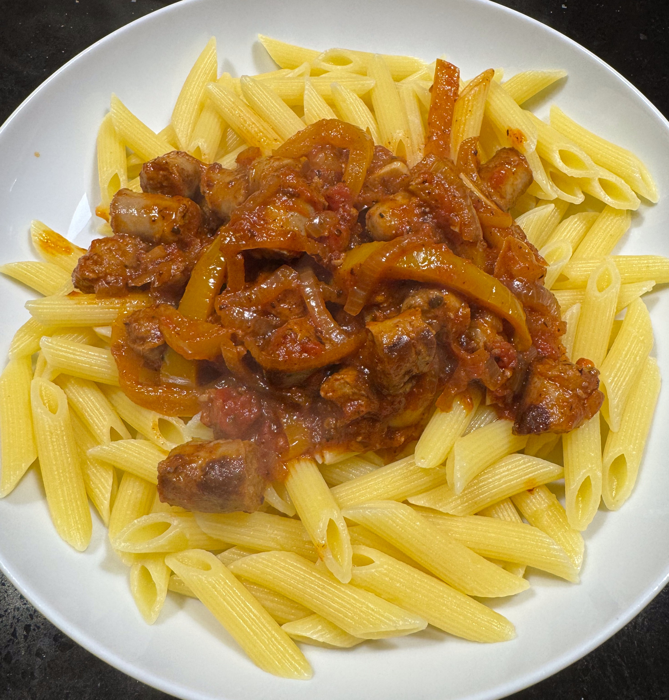
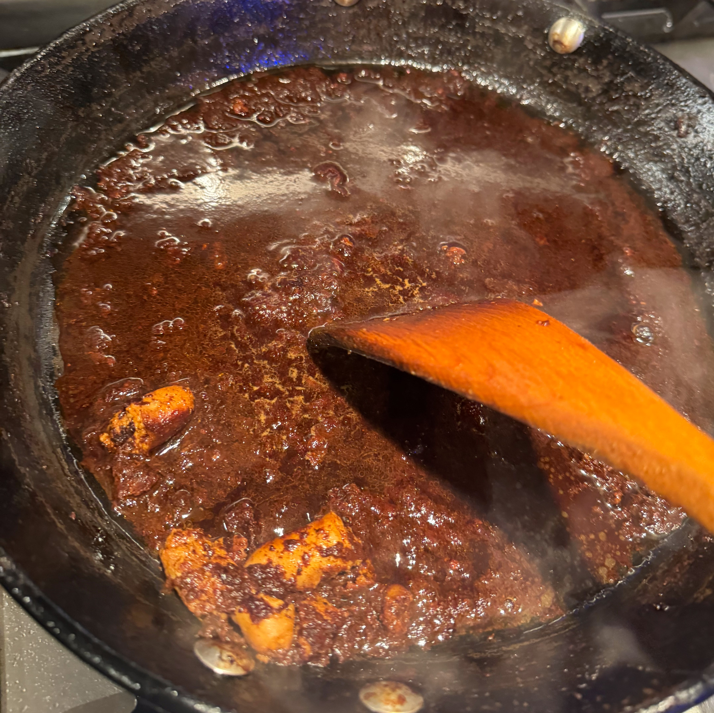

Ainsley's Sausage Pasta
This recipe is from Ainsley Harriott's Friends & Family Cookbook. He also has a version in his Feel-Good Cookbook. A pack of sausage normally weighs 375g, so this recipe uses 1½ pack. I normally cook double the recipe here, with 3 pack of sausage.

Ingredients
- olive oil
- 500g thin sausages
- 2 red onion, thinly sliced
- 1 tbsp tomato puree
- 1 red pepper, thinly sliced
- 1 yellow pepper, thinly sliced
- 2 garlic clove, thinly sliced
- ½ tsp chipotle chilli flakes
- ½ tsp dried oregano
- 1 tin tomatoes
- ¼ tsp brown sugar
- salt and pepper
- Pasta
- 500g short pasta (penne, fusilli etc.)
- 1.5 litre water
- 1 tbsp table salt
Method
Cook the onions. Heat a large saucepan on low heat. Add olive oil and sliced onions, and cook until translucent. This takes about 20 minutes.
Cook the sausages. Heat large frying pan till hot, then add some oil and the sausage. After a couple of minutes, shake the pan and turn down to medium heat. You're aiming for a slow cook, about 20 minutes, where the sausage get browned and the brown gunky stuff accumulates on the bottom of the pan. Be watchful of the pan, you don't want to overdo it and burn the gunk.
Make the sauce. Add the tomato puree to the onions and fry for a couple of minutes. Add the pepper and cook for 5 min. Add the garlic, chilli and oregano and cook for a couple of minutes. Add the tinned tomatoes and sugar. Turn up the heat a bit and bring to a slow bubble.
Add the sausages. Using scissors cut the sausages into the sauce, you should get 5 or 6 pieces per sausage. Deglaze the sausage pan with water, and add to the sauce. Cook the sauce for 10-20 minutes. Taste for salt.
Bring a large pan of salted water to the boil. I use 1 tbsp of table salt for 1.5 litre of water. Cook the pasta following the packet timings. Drain the pasta and serve, with the sauce dolloped on top.
